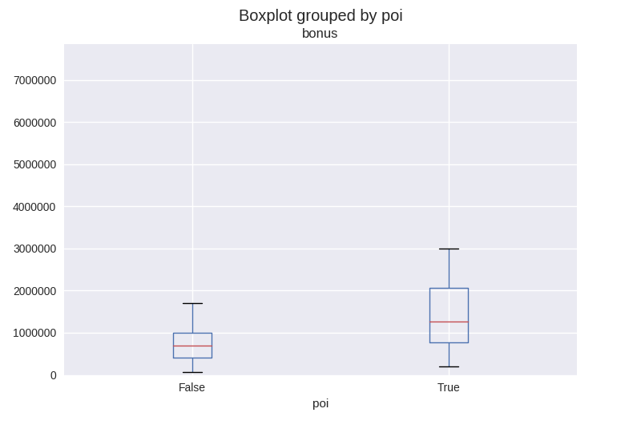
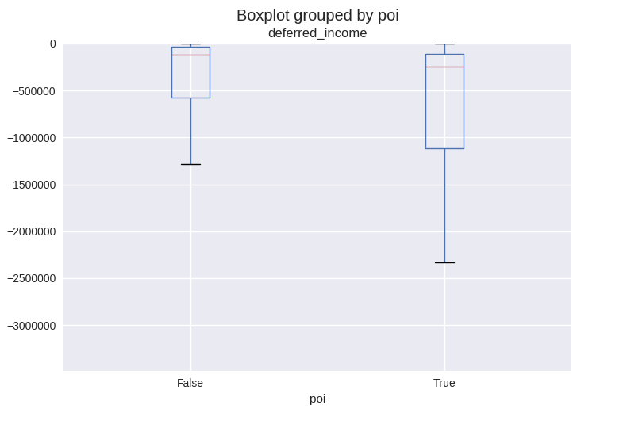

In 2000, Enron was one of the largest companies in the United States.
By 2002, it had collapsed into bankruptcy due to widespread corporate fraud.
In the resulting Federal investigation, a significant amount of typically
confidential information entered into the public record, including tens of
thousands of emails and detailed financial data for top executives.
In this project, I will build a person-of-interest (PoI) identifier based on
financial and email data made public as a result of the Enron scandal.
As input data, a hand-generated list of PoIs in the fraud case is available,
which means individuals who were indicted, reached a settlement
or plea deal with the government, or testified in exchange for prosecution
immunity. The identifier will be a machine learning mode, that can identify with
some validity a possible PoI based on his compensation (e.g. stock value,
salary etc.) and on his communication behaviour (e.g. emails sent to other PoIs,
total number of sent emails etc.).
As a basis for any further investigation, I transferred the pickled data set into a Pandas data frame for easier handling ( approach)
There are 146 data points in the final project dataset. 18 records contain the PoI flag, i.e. 128 do not (poi has no NaN values). Each record in the data set has 21 attributes. Most features have a fair amount of NaN values; especially problematic are the following features:
Those features will be removed from further analysis. Also, email_address is
removed. All NaN values are replace with 0. In summary, 15 input features and
the PoI label remain.
As part of my small exploratory data analysis, I created a number of box plots,
in which the non-PoI and the PoI-associated distribution of a feature can be
compared (
based on this approach).
Most of these box plots were not particularly insightful, there was
no discernible difference between the two distributions which means that the
features are not particularly helpful in telling apart PoIs and non-PoIs.
However, the following plots were interesting:

PoIs tend to have higher bonus payments than non-PoIs. The average bonus payment overall is $1,333,474, the median bonus payment overall is $300,000.

PoIs tend to have a larger share of deferred income than non-PoIs. This could indicate that PoIs have higher stakes in the game and are willing to bet on the company. The mean overall deferred income is $-382,762, the overall median deferred income is $0.
PoIs tend to have massively larger long term incentive payments than non-PoIs. Typically, long-term incentives are given to executives to guide the strategic development of the enterprise. The mean overall long-term incentive is $664,683, the overall median long-term incentive is $0.

PoIs tend to receive more emails that were also sent to other PoIs; you could
argue that PoIs had a tighter communication network to other PoIs than to
non-PoIs , which would be normal for partners in crime.
The mean overall value for shared_receipt_with_poi is ca. 692, the overall
median value for shared_receipt_with_poi is ca. 102.
There are 20 independent variables, and one dependent variable, poi. Here is a description of the features:
As discussed in the quizzes, the data record 'TOTAL' is an outlier and will be removed from the data set. The key 'THE TRAVEL AGENCY IN THE PARK' is also an outlier, as it does not sound like a real person who could be a PoI. Other extreme values were not removed, as they seemed to reasonable in the context of the data set and thus provide valuable information.
I developed three new features based on the results of the exploratory data
analysis. There, bonus, long_term_incentive and shared_receipt_with_poi
proved to be features with a high explanatory value.
The reasoning was that I could improve an already informative feature by
relating it to a logical base value:
These three new features are added to the Pandas data frame and the feature list, and hence are used in the following steps. In total, 18 features are available for model-building.
Univariate feature selection using
SelectKBest() is deployed for this project.
The number of features to be selected is automatically determined using
GridSearchCV() on a Pipeline. The search range of the number of features was
4 to 14. In different runs of
SelectKBest(), the ideal number of features was
always greater or equal to 10.
Here are the selected Features, their scores and their P-Values:
| Feature | Score | p-value |
|---|---|---|
| exercised_stock_options | 24.82 | 0.000 |
| total_stock_value | 24.18 | 0.000 |
| bonus | 20.79 | 0.000 |
| salary | 18.29 | 0.000 |
| lti_ratio | 13.85 | 0.000 |
| deferred_income | 11.46 | 0.001 |
| bonus_to_salary_ratio | 10.78 | 0.001 |
| long_term_incentive | 9.92 | 0.002 |
| restricted_stock | 9.21 | 0.003 |
| shared_ratio | 9.10 | 0.003 |
It is especially interesting to see that my three newly developed features
bonus_to_salary_ratio, lti_ratio and shared_ratio are
among the top ten features chosen by
SelectKBest().
The features selection step is the first step in the pipeline; the second step is a classifier, that uses the selected features for training. The best-performing classifier was a decision tree classifier. Here are the feature importances and the scores:
| Feature Importance | Score |
|---|---|
| bonus | 0.31 |
| lti_ratio | 0.21 |
| shared_ratio | 0.15 |
| exercised_stock_options | 0.10 |
| salary | 0.08 |
| total_stock_value | 0.08 |
| restricted_stock | 0.07 |
| deferred_income | 0.00 |
| long_term_incentive | 0.00 |
| bonus_to_salary_ratio | 0.00 |
Feature scaling was not necessary in this project, as it was not needed for the
two algorithms
GaussianNB() and
DecisionTreeClassifier(). The Naive Bayes
algorithm is based on the probability distribution of each feature; scaling would
not change the distribution of a single feature (only the absolute feature
values). Decision Trees select a single,
predictive feature and determine a splitting criterion; scaling this feature
would change the absolute but not the relative value of the split.
I ended up using a
DecisionTreeClassifier(). I tried to use
GaussianNB() for comparison, also with a prior SelectKBest step.
Here is the performance comparison:
| Evaluation metric | GaussianNB | DecisionTreeClassifier |
|---|---|---|
| Accuracy | 0.84 | 0.81 |
| Precision | 0.37 | 0.35 |
| Recall | 0.32 | 0.40 |
| F1 | 0.34 | 0.37 |
Based on these results, I used the decision tree classifier for the final
analysis, although it is a close call, especially when you consider the training
time. GaussianNB's best model is ready after a few seconds, whereas the best
Decision Tree model takes about 1 minute.
Almost any type of classifier or estimator algorithm has some parameters, that are not directly learned but have to be set by the user. These parameters influence the way, how an algorithm decides on the best model. As a example, a decision tree has a max_depth parameter, that limits the depth of the constructed tree. If you don't tune these parameters well, the performance of the algorithm may suffer, which can be seen in poor evaluation metrics.
As some algorithms have several parameters, it becomes unclear, how each
parameter setting might affect the overall performance, so it is necessary to
systematically search for a good set of parameters.
GridSearchCV() creates an
exhaustive set of combinations of all desired parameter values and then cross-validates
each parameter combination on the machine learning model. In the end, the best
parameter combination is kept.
In my project a pipeline
like this one was used, so that
GridSearchCV()
could jointly search for both the best parameters on the SelectKBest feature
selector and the decision tree classification model.
The parameter k of SelectKBest and the parameters min_samples_split, min_samples_leaf and class_weight were tuned. In one setting, the PoI class was given twice the weight as the non-PoI-class, so that the classifier would optimize the decision tree for PoIs. In the grid search, a F1 score was calculated to determine the best parameter settings.
In the end, the best parameters were:
Sci-Kit Learn describes the need to validate the decisions surrounding machine learning pretty good. I'll summarize the most important points here.
Learning the parameters of a prediction function and testing it on the same data is a methodological mistake: a model that would just repeat the labels of the samples that it has just seen would have a perfect score but would fail to predict anything useful on yet-unseen data. This situation is called overfitting. To avoid it, it is common practice when performing a (supervised) machine learning experiment to hold out part of the available data as a test set X_test, y_test.
When evaluating different settings (“hyperparameters”) for estimators, there is still a risk of overfitting on the test set because the parameters can be tweaked until the estimator performs optimally. This way, knowledge about the test set can “leak” into the model and evaluation metrics no longer report on generalization performance. To solve this problem, yet another part of the dataset can be held out as a so-called “validation set”: training proceeds on the training set, after which evaluation is done on the validation set, and when the experiment seems to be successful, final evaluation can be done on the test set. However, by partitioning the available data into three sets, we drastically reduce the number of samples which can be used for learning the model, and the results can depend on a particular random choice for the pair of (train, validation) sets.
A solution to this problem is a procedure called cross-validation (CV for short). A test set should still be held out for final evaluation, but the validation set is no longer needed when doing CV.
In my project, I use cross-validation iterators with stratification based on
class labels, the
StratifiedShuffleSplit(). The iterator will generate a
user-defined number of independent train / test data set splits.
Samples are first shuffled and then split into a pair of train and test sets.
Some classification problems can exhibit a large imbalance in the distribution
of the target classes, as it is the case here: there are many more non-PoIs in
the data set than PoIs. In such cases it is recommended to use stratified
sampling as implemented in StratifiedShuffleSplit to ensure that relative class
frequencies is approximately preserved in each train and validation fold.
I used 100 splits and a test size of 30% of the data set (i.e. a training size of 70%).
The accuracy of my DecisionTreeClassifier was 0.81, That means that my classifier correctly identified ca. 80% of the true positives and the true negatives in relation to all cases. In my project, the positives are the PoIs, and the negatives are the non-PoIs.
The precision of my DecisionTreeClassifier was about 0.35, which is a low value, as the precision should ideally be 1.00. It means that my classifier occasionally thinks that a non-PoI is actually a PoI, which would be a false positive. It effectively recognizes too many PoIs (false alarms).
The recall of my DecisionTreeClassifier was 0.40, which is marginally better than the precision. In this case, some actual PoIs are classified as non-PoIs, so the classifier misses those real PoIs (albeit less often than it produces false alarms).
As there is a tradeoff between precision and recall, I would argue that it is
important to catch the real PoIs and not let them walk free, so a higher recall
is more desirable than a higher precision (that's why I optimized the
DecisionTreeClassifier for PoIs). However, a low precision leads to a longer
list of suspects and a lot of unwarranted allegations and police work,
which I think is the lesser problem, as any citizen is considered innocent
until proven guilty.
Both precision an recall are not particularly high, which makes this classifier probably unsuitable for actual deployment in a law enforcement setting.
[1]: https://discussions.udacity.com/t/pickling-pandas-df/174753/2 Pickle to Data Frame
[2]: https://discussions.udacity.com/t/eda-on-financial-features/192556/3 EDA on financial features
[3]: https://discussions.udacity.com/t/error-using-pipeline/171750/6 Pipeline usage
[4]: http://scikit-learn.org/stable/modules/cross_validation.html#cross-validation Cross-validation: evaluating estimator performance
I hereby confirm that this submission is my work. I have cited above the origins of any parts of the submission that were taken from Websites, books, forums, blog posts, github repositories, etc.